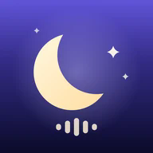

Podnap
Shuffle podcasts to sleep
- Itch
- Scrolling for an episode in the dark, then waking up when it ends.
- Fix
- One tap plays random episodes back to back until the sleep timer fades it out.
- Skipped
- Accounts, queues, discovery. It's a bedtime button.